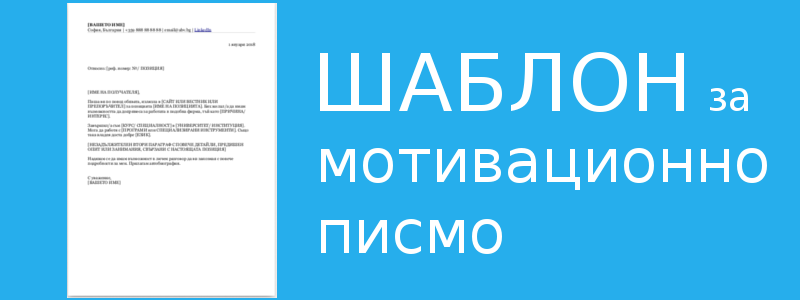

Мотивационно писмо и други писма при кандидатстване (+ шаблони)
Кандидатстването е сложна операция, зависеща от редица опорни и допълнителни функции.
В сърцето на всичко лежи автобиографията ви, която предоставя на наемащите необходимата им информация. Но също толкова важно е да покажете, че сте добри в комуникацията. Тук на сцената излизат писмата, които може да засвидетелстват на отсрещаната страна, че не общувате само с дати и подточки, а с цели изречения, интелигентност и такт.
Както винаги, персонализирайте писмата преди да ги изпратите. Трийте, добавяйте и тълкувайте по ваше усмотрение!
Мотивационно писмо
Когато пишете мотивационно писмо си представете, че вие сте част от Човешки ресурси.
Затова следвайте тези две правила: Покажете им с какво ще допринесете за точно тази фирма. Стремете се да се ограничите до една страница.
Традиционно започваме с това как сме намерили обявата, по която кандидатстваме или как сме се свързали с човека, който ни е препоръчал да се обърнем към този рикрутър.
После изтъкнете образованието или опита си. Дайте конкретен пример, ако е възможно. Свържете това, което сте направили с работата, която се надявате да вършите в новата компания.
Кажете също кои ваши качества и умения ви правят подходящ кандидат.
Имайте предвид, че автобиографията ви може да не е под ръка на рикрутъра, затова включете линк към LinkedIn, имейл или телефон примерно, за да може да ви звъннат веднага щом са убедени, че може да сте точния човек.
Лично аз пращам мотивационно писмо прикачено като pdf документ, за да не се развали форматирането, но може да го сложите и в главния имейл.
Пиша ви по повод обявата, излязла в [САЙТ ИЛИ ВЕСТНИК ИЛИ ПРЕПОРЪЧИТЕЛ] за позицията [ИМЕ НА ПОЗИЦИЯТА]. Бих желал/а да имам възможността да допринеса за работата в подобна фирма, тъй като [ПРИЧИНА/ ИНТЕРЕС].
Завършил/а съм [КУРС/ СПЕЦИАЛНОСТ] в [УНИВЕРСИТЕТ/ ИНСТИТУЦИЯ]. Мога да работя с [ПРОГРАМИ или СПЕЦИАЛИЗИРАНИ ИНСТРУМЕНТИ]. Също така владея доста добре [ЕЗИК].
Надявам се да имам възможност в личен разговор да ви запозная с повече подробности за мен. Прилагам автобиография.
С уважение,
[ИМЕ]
Изтеглете и темплейта за мотивационно писмо, който използвам и където има допълнителни неща, които го правят да изглежда по- официално.
Изтеглете темплейт за мотивационно писмо оттук.
Благодарствено писмо
Благодарственото писмо се изпраща до 24 часа след интервюто.
Тъй като пишете на интервюращи, които най- вероятно са се срещнали със сума ти кандидати, наблегнете на специфичните детайли от разговора ви.
За да оставите ярък отпечатък в ума на интервюиращия припомнете им за какво сте говорили: интернет връзки, подробности, портфолио.
Знаете ли, че Тейлър Суифт носи поздравителни картички, така че ако срещне някой който има рожден ден или друг празник може да му поднесе нещо красиво с персонализирано послание. Нищо чудно, че тя привлича едни от най- верните фенове и приятели.
Послушайте и съвета на литературния феномен Лемъни Сникет.
Когато пишете бележката, не започвайте с "Благодаря" защото ще се чудите как да продължите.
Вместо това първо кажете какъв е повода, какво ви е впечатлило или как сте се почувствали.
Чак след това благодарете.
Здравейте, [ИМЕ],
Благодаря Ви за възможността да [посетя офиса на компанията ви и да се запозная с колегите/ опозная начина ви на работа/ обсъдим спецификите на работата в [ИМЕ НА КОМПАНИЯТА] на позицията [ИМЕ НА ПОЗИЦИЯТА]/ видя как ценностите на компанията се прилагат на практика/ поговорим на събитието за кариери [ИМЕ НА ФОРУМА]].
Много ми беше приятно да разговарям с Вас. Времето и съвета Ви ми бяха от полза, за да се ориентирам какво търсите.
Още веднъж Ви благодаря за отделеното време, внимание и за отговорите на въпросите ми.
Искрено вярвам, че моите умения, професионален опит и лични качества ще паснат за позицията.
Ако имате нужда от някаква допълнителна информация — с удоволствие ще ви отговоря!
Прилагам към писмото портфолиото ми, за което ме помолихте/ което би представлявало интерес за Вас.
У мен остана един въпрос, който се отнася до [ПРЕДМЕТ НА ВЪПРОСА].
Поздрави,
[ИМЕ]
+ контакти
Писмо за проверка
Така нареченото follow-up писмо има за цел потвърждаване на заинтересоваността ви от позицията или предложената оферта или сделка.
Така може да напомните за себе си и да получите някакви новини.
Ако имате повод като статия, която сте прочели във вестника или анонс, който компанията е направила в социалните медии още по- добре.
Подобно писмо се праща обикновено след 2 до 4 седмици, но в зависимост какво сте се разбрали. Ако са ви казали, че ще получите обратна връзка до две седмици, дори и да ви отговорят троснато като се свържете повторно (както ми се е случвало) поне ще имате спокойствието, че тази глава е затворена и за момента това не е мястото, което ще оцени таланта ви.
Все пак дори да са отхвърлили кандидатурата ви запазете добрия тон и потвърдете че бихте желали да работите отново заедно някога в бъдещето.
Сигурно сте чували за теорията за шестте степени на разделение, според която всеки случаен човек, от която и да е част от света е свързан с вас. А най- вероятно в професионалната ви сфера степените са по- малко.
Така че не вреди винаги да бъдем учтиви, но твърди.
Бъдещето е неясно и изпълнено с надежди.
Запазете си всички възможности!
Ето как:
Здравейте, [ИМЕ],
Преди около няколко дни Ви изпратих CV и мотивационно писмо, във връзка с обявата, която сте публикували в [ИМЕ НА САЙТ ИЛИ ВЕСТНИК]. Бих желал/а да потвърдя, че документите са получени. /Преди около две седмици имахме възможност да разговаряме във връзка с отворената позиция за [ИМЕ НА ПОЗИЦИЯТА] във Вашата компания.
Вярвам, че уменията и опитът ми отговарят на очакванията ви за подобна позиция. По- специално, трите години като [ПОЗИЦИЯ], сертификацията ми за [УМЕНИЕ] и наградата, която спечелих за [ПРОЕКТ/ КОНКУРС].
Моля, кажете ми ако имате нужда от още материали от мен.
Може да се свържете с мен на [ТЕЛЕФОН] или [ИМЕЙЛ].
Очаквам отговора ви с нетърпение.
Поздрави,
[ИМЕ]
Препоръчително писмо
Ако кандидатствате за позиция с повече отговорности, може да ви поискат препоръчително писмо от предишни колеги, супервайзъри или преподаватели.
Преди време препоръчителното писмо е играело огромна роля, но днес тази практика отмира. Все пак то може да ви накара да изпъкнете, така че си заслужава да се разгледа.
Ако ще молите познатите за препоръка, пратете им шаблон, защото никой не обича да започва пред празен лист. Това важи особено за хора, за които се предполага, че са заети и донякъде влиятелни.
Едно препоръчително писмо може да включва постижения, повишения и задължения, които сте имали на предишната си позиция. Също така е добро място за изтъкване на лични качества, навици и дисциплина, които ви отличават и ви правят подходящ кандидат.
За повече официалност обикновено такива писма се пишат на фирмена бланка и се завършват с подпис и печат. Разбира се, вижте изискванията на организацията предварително, за да не се налага да се връщате повторно заради някакво бюрократично изискване. А и в днешно време все повече всичко е дигитално.
Ето примерен текст:
Познавам [ВАШЕТО ИМЕ] в ролята си на техен ръководител на теза/ супервайзър/ колега.
Той/ тя работи в [ИМЕ НА КОМПАНИЯТА] за [ДАТИ или ПЕРИОД ОТ ВРЕМЕ] в качеството на [ПОЗИЦИЯ].
През това време участва в следните проекти:…
Докато работех с [ВАШЕТО ИМЕ], постигнахме…
Качества, които ценя в [ВАШЕТО ИМЕ] са...